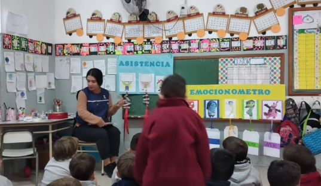
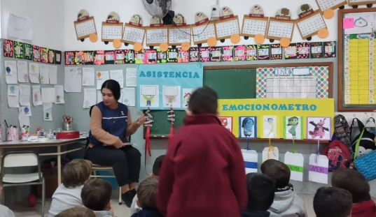

Nivel Superior: Jornadas de formación para estudiantes de cuarto año
En abril, las estudiantes de cuarto año comenzaron la preparación para realizar sus Práctica y Residencia, última instancia de la carrera.
En ese marco, durante el mes de mayo, las alumnas del profesorado de Educación Inicial, participaron
de dos espacios especialmente pensados para su formación humana y académica, ambas fundamentales para quienes serán futuras docentes.
Así, participaron de un encuentro guiado por el prof. Luciano Castelli, coordinador de pastoral
de nuestro Instituto, procurando favorecer un encuentro más cercano con Jesús y confiarles así esta nueva etapa que comienzan.
También, se llevó a cabo el Ateneo: “La multitarea en el Nivel Inicial”, en el marco de la cátedra
Práctica 4.
Nos alegramos del regreso a la presencialidad en el Nivel Superior, que nos permite continuar trabajando y brindando la calidad y los valores de siempre, con la calidez del encuentro en las aulas.

 
